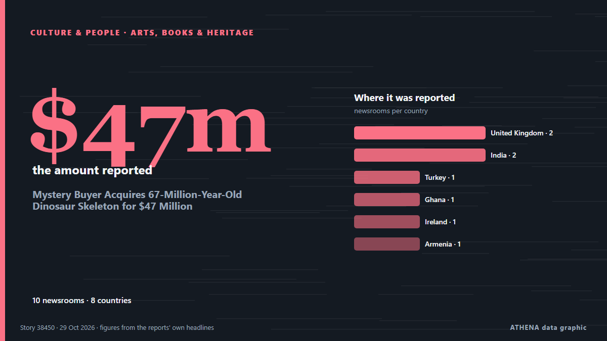

Mystery Buyer Acquires 67-Million-Year-Old Dinosaur Skeleton for $47 Million

A rare Nanotyrannus skeleton has sold for $47.3 million at a Sotheby’s auction in New York City, becoming the second-most expensive dinosaur fossil ever sold. من Greek Reporter
نشرته بشكل مستقل 10 مصادر في 8 دول منذ 27 أكتوبر، وأول من نشره BBC News؛ والتغطية تتراجع. تُؤرشف أخبار الرياضة والثقافة دون تقييم للمخاطر. الثقة 87٪ (مرتفعة)، وعدد المصادر المستقلة المؤكِّدة: 10، بمتوسط موثوقية للمصادر يبلغ 75٪. وسائل الإعلام حسب البلد: المملكة المتحدة (2), الهند (2), تركيا (1). التغطية: من 27 أكتوبر إلى 29 أكتوبر، 51 ساعة.
ما الذي تغيّر: 2 تقارير جديدة من 2 غرف أخبار خلال 24 ساعة حتى 29 أكتوبر.
العنوان الأول: Rare Nanotyrannus skeleton sells for $47.3M at US auction
تُعرض العناوين بالإنجليزية كما نُشرت.
نظرة سريعة
اختير وقُيِّم وكُتب وفق منهجية ATHENA المنشورة. لا يتدخل أي محرر في الأحداث بعينها. كيف يُنتَج ›
| 27 Oct 13:23 UTC | 1 |
|---|---|
| 27 Oct 15:23 UTC | 1 |
| 27 Oct 17:23 UTC | 0 |
| 27 Oct 19:23 UTC | 1 |
| 27 Oct 21:23 UTC | 1 |
| 27 Oct 23:23 UTC | 0 |
| 28 Oct 01:23 UTC | 0 |
| 28 Oct 03:23 UTC | 0 |
| 28 Oct 05:23 UTC | 1 |
| 28 Oct 07:23 UTC | 3 |
| 28 Oct 09:23 UTC | 0 |
| 28 Oct 11:23 UTC | 0 |
| 28 Oct 13:23 UTC | 0 |
| 28 Oct 15:23 UTC | 1 |
| 28 Oct 17:23 UTC | 0 |
| 28 Oct 19:23 UTC | 0 |
| 28 Oct 21:23 UTC | 0 |
| 28 Oct 23:23 UTC | 0 |
| 29 Oct 01:23 UTC | 0 |
| 29 Oct 03:23 UTC | 0 |
| 29 Oct 05:23 UTC | 0 |
| 29 Oct 07:23 UTC | 0 |
| 29 Oct 09:23 UTC | 0 |
| 29 Oct 11:23 UTC | 0 |
| 29 Oct 13:23 UTC | 0 |
| 29 Oct 15:23 UTC | 1 |
لماذا هذه الأرقام
الأهمية
الخطر
الثقة
التغطية — من نشر الخبر ومتى
العنوان كما نُشر · يفتح الأصل- BBC News · المملكة المتحدةNanotyrannus skeleton sells for $47.3m in New York auction
- Anadolu Agency (English) · تركياRare Nanotyrannus skeleton sells for $47.3M at US auction
- The Guardian · المملكة المتحدةRare Nanotyrannus skeleton sells for $47.3m at New York auction
- MyJoyOnline · غاناNanotyrannus skeleton sells for $47.3m at New York auction
- NDTV · الهندRare Dinosaur Skeleton Sells For $47 Million In US
- Times of India · الهندMontana rancher's dinosaur skeleton sells for $47.3m, 5 times top estimate
- TheJournal.ie · أيرلنداRare nanotyrannus skeleton ‘Jodi’ sells for $47.3m after 12-minute bidding battle
- NEWS.am (English) · أرمينياSkeleton of dinosaur, nicknamed "Jodie," sold for more than $47M at auction
- Ada Derana · سريلانكاNanotyrannus skeleton auctioned for $47.3m in New York
- Greek Reporter · اليونانMystery Buyer Acquires 67-Million-Year-Old Dinosaur Skeleton for $47 Million